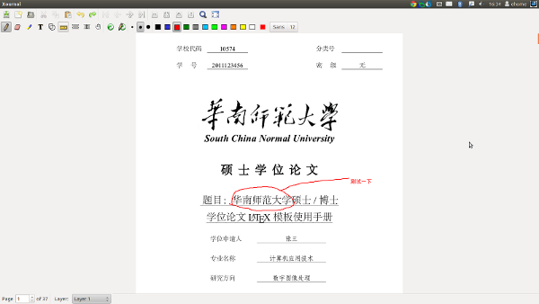

PDF相关
Table of Contents
1 PDF阅读
1.1 Evince
1.1.1 解决Evince乱码
sudo apt-get install xpdf-chinese-simplified xpdf-chinese-traditional poppler-data
如果有必要，可能还需要修改 /etc/fonts/conf.d/49-sansserif.conf 的字体设置：
sudo gedit /etc/fonts/conf.d/49-sansserif.conf
2 PDF标注
Xournal是我目前发现的在Linux下最好的一个pdf标注工具，支持手写标注、保存标注以及导出为pdf。
2.1 安装Xournal
sudo apt-get install xournal
2.2 标注PDF
启动Xournal后，在【File】菜单中找到【Annotate PDF】，导入一个pdf文件，之后就可以直接在这个pdf文件中手动标注。支持文字、画笔、直线、形状等多种标注方式，如下图所示。

2.3 保存标注
标注完成后，可以将它保存为Xournal文件(.xoj)，以便下次修改。
2.4 导出PDF
完成标注后，在【File】菜单中有一个【Exported to PDF】的菜单项，可以将窗口中的内容导出为pdf文件。注意导出后的pdf文件里的标注将不能再修改，所以如果以后想继续编辑你的标注，最好多存一份Xournal文件。
3 PDF分割、合并
3.1 PDF分割
PDF Chain是Linux下一个比较强大的pdf分割、合并工具，支持pdf的合并、分割、添加背景、添加附件等。这里主要介绍它的分割功能，它可以将一个pdf文件的所有页面分割成一个个单独的pdf文件，保存在指定的文件目录中。
启动PDF Chain后，选择【Split】选项卡，点击【添加】按钮，导入一个pdf文件。Prefix输入框可以让你指定分割后的文件的前缀名，后面的Counter Digits是前缀名的计数器初始值。如无必要可以不用修改这两项。之后点击【保存(s)】按钮，指定要保存的文件夹，将按照刚刚的前缀名规则将这份pdf的每一页单独保存成一个pdf文件。
3.2 PDF合并
PDF Chain可以提供pdf合并功能，但有张数限制（<= 26张），但经过我测试，超过26张的pdf文件可以分几次合并，最后也能够合并成一个完整的pdf文件，但比较麻烦。
因此对于PDF的合并，我推荐使用PDF-Shuffler。它是一个非常小巧的pdf合并工具，可以轻松的合并pdf文件，并且没有张数限制。
3.3 安装PDF-Shuffler
sudo apt-get install pdfshuffler
3.4 使用方法
PDF-Shuffler 的使用非常简单，启动 PDF-Shuffler 后，界面的下面有几个按钮，分别是：
- 退出(Q)：退出 PDF-Shuffler；
- Delete Page(s)：删除预览窗口中选定的页面；
- Import pdf：导入pdf文件，通常是启动 PDF-Shuffler 后要做的第一件事；
- Export pdf：导出pdf文件；
- About：关于 PDF-Shuffler 。
其他的交给读者去尝试吧。
4 PDF编辑
pdf是二进制文档，要直接编辑比较困难（不是不可能）。当然也有非常专业的pdf编辑器，但基本都是要收费的。如果想要方便的编辑pdf里的内容，又不想要花钱，可以考虑我下面的做法。
4.1 预备软件
- PDF-Shuffler：pdf合并
- PDF Chain：pdf分割
- Inkscape：单张pdf编辑
4.2 步骤
- 使用PDF Chain将待修改的pdf文件的每个页面分割成一个个单独的pdf文件，具体参考上面PDF分割的内容。
- 找到要修改的那个页面，然后使用Inkscape打开并修改里面的内容。
- 使用PDF Shuffler将所有页面重新合并为一个pdf文件。
5 PDF格式转换
fileminx 是一个很方便的在线转换文档的网站，支持很多种格式，包括：
| 文档 | 图像 | 音乐 | 视频 |
|---|---|---|---|
| DOC, DOCX, LWP, MediaWiki, ODT, PDF, RTF, TXT, Word 6, Word 97-03, WPS | BMP, GIF, ICO, JPEG, JPG, PCX, PIC, PICT, PNG, PSD, SUN, TGA, TIF, TIFF, WMF | AAC, AIF, AIFF, AU, FLAC, iPhone, iPod, MKA, MP2, MP3, OGG, RA, SND, VOC, WAV, WMA | 3G2, 3GP, ASF, AVI, DIVX, DVD, Flash, GIF, iPod, MKV, MOV, MP4, MPEG, MPG, PSP, RM, WMV, XVID |
利用它可以很方便的将pdf文件转换成所需要的格式，而且转换后的效果很好。但是你可能会发现原来的文档里面的一些很漂亮的插图在转换之后变得非常难看，这类插图大多包含了文字，所以在转换的时候发生了错位。为了避免这个问题，我总结了几个比较好的 LaTeX 插图习惯：
- 离线绘图。如果使用的是TikZ这类的在线绘图工具1，不要直接在你的文档里插入绘图代码，而是像离线绘图工具一样单独创建一个文件，然后编译生成 pdf/eps/ps 等独立的图形文件后再导入进你的文档里；
- 在交给 fileminx 转换之前，先确保TeX文档中没有直接导入pdf格式的插图，如果有的话，就使用pdftops命令将这些插图转为ps文件或者eps文件，然后在TeX文档中改为对这类文件的引用，重新编译后再交给 fileminx去转换。这时你的文档里的所有插图都变成了位图，所以不会有文字错位的问题。完成后再将引用的格式改回pdf，毕竟文字可选中的图片才是真正意义上的高精度图片，呵呵。
Footnotes:
1 这里的在线不是指联网，而是指可以直接在TeX里插入绘图代码的工具，常见的是TikZ、pstricks等。与之相对的是离线绘图工具，即需要单独建立文件，然后生成eps等独立的图形文件的绘图工具。